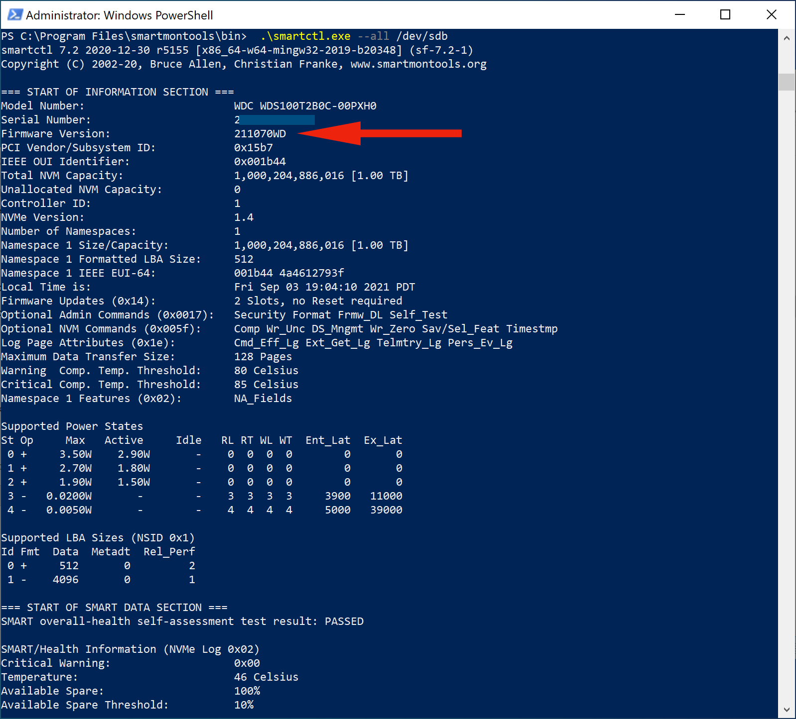
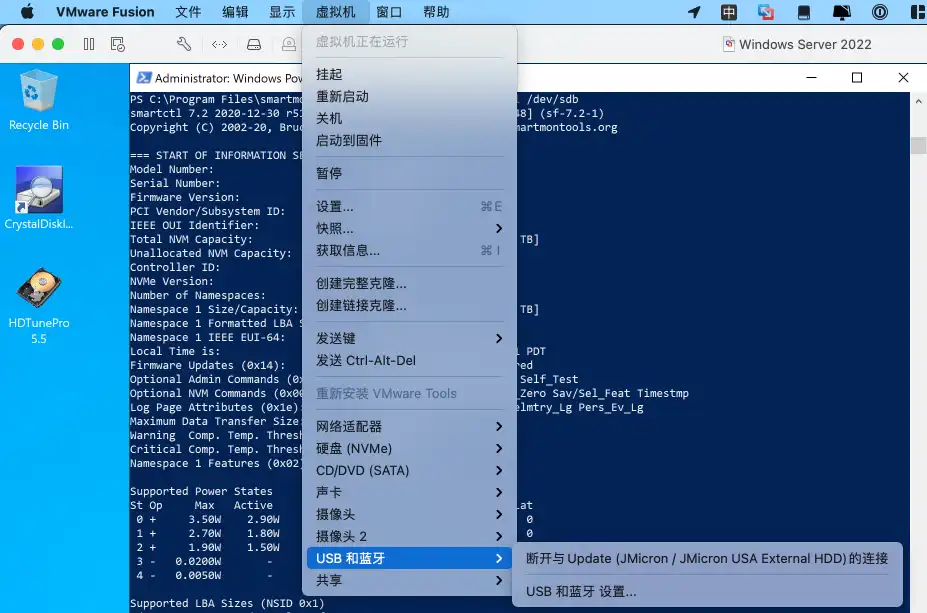
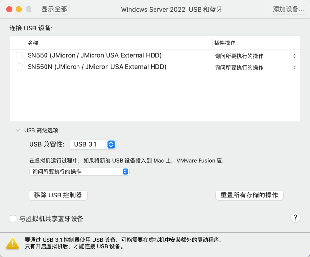

请访问原文链接：西部数据 SN550 “23 固件门” 检测方法 查看最新版。原创作品，转载请保留出处。
作者主页：sysin.org
事件简介：西数 SN550 缓外速度减半
作为市场上最受欢迎的 NVMe SSD 之一，西数 SN550 受到了很多 DIY 玩家的欢迎。
但是在近期，这款 SSD 被网友发现在新批次中偷偷更换了闪存颗粒，固件号也变了。
新版的闪存颗粒使用的是 002031 1T00，固件版本号是 233010WD；旧版闪存是 60523 1T00，固件号则是 211070WD。
使用了新版闪存的 SN550，在缓外性能方面，顺序写入速度只能达到 390MB/s，为旧版的一半，这表现也就比更低端的 SN350 略好一些。
诡异的是，SN550 的新版固件编号，和 SN350 同样为 23 开头，反而和 SN550 旧版固件编号区别非常大，事情就变得很有意思了。
笔者一直是 SN550 用户，给身边朋友推荐了这个产品 (sysin)，用来做移动硬盘（USB NVMe SSD），毕竟同级别产品似乎无敌手（同级别：Intel、三星和镁光性价比略差）。
近期购买 SN550 的用户要注意了，7 月份及以后生产日期的基本是 23 固件版本，23 固件版本相比降价了，21 固件版本价格略有上涨，两者差价超过 50。个别商家根据生产日期售卖 21 版本，因为商家不能拆封验证，所以购买后还是需要自己验证一下。以下是笔者总结的通用检测方法。
通用检测方法
因为驱动的原因或者系统的限制，在 Windows 或者 Windows 虚机下可以更好的识别到 NVME 的 S.M.A.R.T. 状态数据，虚拟化 Windows 是跨平台的，我们姑且称为通用检测方法。
关于 smartmontools 的介绍，可以参看本站 另外一篇文章。
Windows
打开 Windows Powershell，复制如下命令执行：
1 | Set-ExecutionPolicy Bypass -Scope Process -Force; iex ((New-Object System.Net.WebClient).DownloadString('https://chocolatey.org/install.ps1')) |
注意最后一行，sda 是第一块硬盘，如果是将 SSD 插入电脑安装系统的就是 sda，如果是第二块硬盘就是 sdb，然后是 sdc，以此类推。
效果如图：Firmware Version：21 开头，则没有问题。

其他检测软件：CrystalDiskInfo，HD Tune，可能无法检测到外置 USB NVME 设备的固件，本例控制芯片为 JMS583 测试失败（另外两个常用的控制芯片 RTL9210 和 ASM2362 暂无条件测试）。
在 Windows 下的命令 wmic diskdrive get caption, firmwarerevision 也可以获取固件版本，但仍限于本地磁盘。
macOS
在 macOS 中需要第三方 驱动（SAT SMART Driver） 来检测外部 USB 存储设备的 SMART 数据。macOS 11 Big Sur 在启动过程中不会加载任何非 Apple 驱动程序。因此，如果在系统启动之前或期间连接了外部驱动器，macOS 将不会为其加载第三方驱动程序。以前，这种行为（所谓的 “安全启动”）适用于带有 T2 芯片的 Mac，因为 Big Sur 现在适用于所有 Mac（即使没有 T2 芯片）。
解决方法：系统启动结束后，物理断开（拔下）外部 USB 驱动器并重新连接。这将强制 macOS 为新连接的驱动器加载驱动程序。
打开终端执行：
1 | brew install smartmontools && smartctl --all /dev/disk0 |
注意：disk0 为内置磁盘，可以通过 diskutil list 查看，比如 macOS Big Sur 默认安装，第一个外置 USB SSD 的盘符为 disk2。
经过测试，USB SATA SSD 可以正确检查状态，但是 USB NVME SSD 始终无法检查到 SMART 状态（本例 USB NVMe 控制芯片为 JMS583）。
目前，没有适用于 macOS 的 NVMe SMART over USB 驱动程序。macOS 不支持此功能，并且没有第三方驱动程序（内核扩展）。此外，目前还没有来自 NVM Express Workgroup 的 NVMe SMART over USB 官方规范。目前只有供应商特定的解决方法可用，如 JMicron 和 AMedia，但没有通用标准。内部基于 NVMe SSD 的外部 USB SSD 的一些示例：Samsung Portable T7 Touch SSD、Crucial X8 Portable SSD。
在 macOS 上目前只能读取 USB SATA SSD 的 SMART 数据，WD SN550 当然是 NVMe SSD，目前只能通过 Windows 虚机的方式来检测。
要求：
Windows 10 系列虚机，或者直接使用本站 Windows Server 2019 OVF
注意点：
使用虚拟 USB 控制器:

“USB 和蓝牙 设置…” 默认配置即可：

如果无法检测到 USB 存储设备，可以查看：故障排除。
登录 Windows 虚机，打开 Windows Powershell，复制如下命令执行：
1 | Set-ExecutionPolicy Bypass -Scope Process -Force; iex ((New-Object System.Net.WebClient).DownloadString('https://chocolatey.org/install.ps1')) |
注意最后一行，虚机默认一块磁盘，主机连接的 USB 存储设备，通常就是 sdb。
Linux
如果是电脑内置 SSD，查看方法如下：
CentOS：
1 | yum -y install smartmontools && smartctl --all /dev/nvme0n1 #/dev/* 具体名称请运行 sudo fdisk -l 查看 |
Ubuntu：
1 | sudo apt install smartmontools && sudo smartctl --all /dev/nvme0n1 #/dev/* 具体名称请运行 sudo fdisk -l 查看 |
如果是外接 USB NVME SSD，同样可能需要虚机来解决。
要求：
WMware Workstation 16 for Linux
Windows 10 系列虚机，或者直接使用本站 Windows Server 2019 OVF
操作方法具体参看上述 macOS 部分，类似的：
登录 Windows 虚机，打开 Windows Powershell，复制如下命令执行：
1 | Set-ExecutionPolicy Bypass -Scope Process -Force; iex ((New-Object System.Net.WebClient).DownloadString('https://chocolatey.org/install.ps1')) |
注意最后一行，虚机默认一块磁盘，主机连接的 USB 存储设备，通常就是 sdb。

文章用于推荐和分享优秀的软件产品及其相关技术，所有软件默认提供官方原版（免费版或试用版），免费分享。对于部分产品笔者加入了自己的理解和分析，方便学习和研究使用。任何内容若侵犯了您的版权，请联系作者删除。如果您喜欢这篇文章或者觉得它对您有所帮助，或者发现有不当之处，欢迎您发表评论，也欢迎您分享这个网站，或者赞赏一下作者，谢谢！
 支付宝赞赏
支付宝赞赏  微信赞赏
微信赞赏赞赏一下
敬请注册！点击 “登录” - “用户注册”（已知不支持 21.cn/189.cn 邮箱）。 请勿使用联合登录（已关闭）。